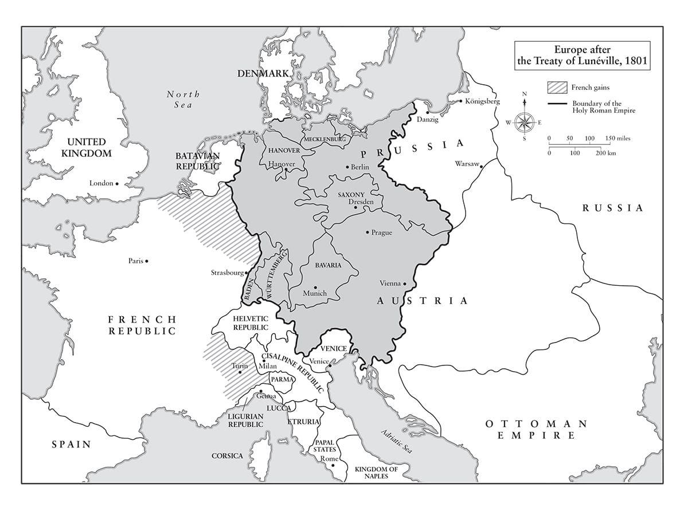

Thật tiếc thay là con người ấy không lười biếng.
• Talleyrand nói về Napoleon
Sau những cuộc cách mạng lớn, cần phải lường tới tất cả các biến cố trước khi mọi thứ lắng dịu xuống.
• Napoleon nói với Jourdan, tháng Một năm 1800
⚝ ✽ ⚝
Anh sẽ ập vào Paris một cách bất ngờ”, Napoleon viết cho Lucien từ Lyon ngày 29 tháng Sáu năm 1800. “Anh không muốn các cổng chào hay bất cứ thứ lòe loẹt rẻ tiền nào. Anh có một quan điểm tích cực về bản thân nên không quan tâm tới những thứ vô nghĩa như thế. Sự khải hoàn đích thực duy nhất là sự hài lòng của dân chúng”. Napoleon tới Tuileries lúc 2 giờ sáng 2 tháng Bảy và tới ngày 14 tháng Bảy, lúc này đã là một ngày cố định trong lịch cộng hòa, những cuộc diễu binh lớn được tổ chức tại Champ de Mars (nơi ngày nay tháp Eiffel tọa lạc) với sự xuất hiện của những lá quân kỳ đoạt được, cũng như các buổi lễ tại điện Invalides, quảng trường Concorde và quảng trường Vendôme. Ông nói với các tổng tài đồng sự của mình rằng ông không muốn tái lập một cuộc đua chiến xa, thứ “có thể đã rất hay tại Hy Lạp, nơi người ta chiến đấu trên chiến xa, song chẳng có mấy ý nghĩa ở chỗ chúng ta”. Đội Cận vệ Tổng tài vừa mới tới nơi vào sáng hôm đó, vì thế họ diễu binh trong những bộ quân phục tả tơi và dính máu của mình. Lucie de La Tour du Pin ngạc nhiên khi thấy đám đông im lặng và sốc trước bộ dạng của các thương binh; bà ta kết luận rằng trên hết họ muốn hòa bình sớm lập lại. Cho dù các điều khoản hòa bình đã được thương lượng với Áo ngay từ tháng Bảy, nhưng hiệp ước sẽ chỉ được ký kết sau khi Moreau giáng cho Đại Công tước Johannes một đòn thất bại nặng nề tại Hohenlinden ngày 3 tháng Mười hai, bắt sống 8.000 tù binh, chiếm 50 đại bác và 85 xe đạn cùng thuốc súng và quân nhu. Quân Áo tiếp tục chiến đấu một cách trễ nải tới tận ngày Giáng sinh, khi Đại Công tước Charles đồng ý một thỏa thuận đình chiến tại Steyr, chỉ cách Vienna 144 km. “Ông lại vượt lên chính mình trong chiến dịch này”, Napoleon viết cho Moreau. “Đám người Áo tồi tệ này rất bướng bỉnh. Chúng đang trông cậy vào băng giá và tuyết; chúng vẫn chưa kịp làm quen với ông. Tôi gửi tới ông lời chào thân thiết.
Đoạn kết của cuộc Gần như Chiến tranh tới vào ngày 3 tháng Mười, với một hiệp ước do Joseph thương lượng và được ký tại Mortefontaine là lâu đài của ông ta bên sông Loire. Điều này có nghĩa là Pháp không còn phải đối mặt với mối đe dọa của lực lượng hải quân Mỹ mới hình thành phối hợp cùng Hải quân Hoàng gia Anh. “Tổng tài Thứ nhất nhìn nghiêm nghị”, phái viên Mỹ William Van Murray viết sau khi hiệp ước được phê chuẩn, “có vẻ nghĩ ngợi, đôi lúc khắc nghiệt – không phóng đại hay tự cao tự đại – rất chính xác trong mọi cử chỉ, cho thấy đồng thời một trái tim nóng nảy và một cái đầu có phương pháp… của một kiếm sư bậc thầy khéo léo bậc nhất… Ông ấy nói với sự thẳng thắn vượt xa nỗi sợ hãi khiến ta nghĩ rằng ông ấy không có chút giữ kẽ nào”. Bốn ngày sau, Pháp và Tây Ban Nha nhất trí về Công ước bí mật San Ildefonso, trong đó thỏa thuận rằng khi Pháp ký hiệp ước hòa bình với Áo, vùng Tuscany do nhà Habsburg kiểm soát sẽ được nhượng lại cho người thừa kế thuộc nhà Bourbon của Công tước Parma, Don Louis con rể Vua Tây Ban Nha Charles IV; đổi lại Tây Ban Nha sẽ nhượng lại Louisiana (khi đó là một vùng lãnh thổ rộng lớn bao gồm đất đai của 13 tiểu bang thuộc Hoa Kỳ ngày nay, chạy dài từ vịnh Mexico tới biên giới Canada) cho Pháp.(*) Theo một điều khoản của San Ildefonso, Pháp hứa không bán lại Louisiana cho một bên thứ ba.
Trong khi đó, triển vọng Malta, vốn đã phải chịu hai năm phong tỏa của Hải quân Hoàng gia, rơi vào tay người Anh khiến Napoleon chính thức trao lại hòn đảo cho Paul I của Nga, trên tư cách tân trưởng giáo Dòng Hiệp sĩ St John của Sa hoàng. Cho dù điều này không có chút sức nặng nào với người Anh khi họ đã chiếm được hòn đảo vào ngày 5 tháng Chín, nhưng nó đã giúp cải thiện mối quan hệ Pháp – Nga và Sa hoàng đề xuất thừa nhận sông Rhine và dãy Alps – Maritimes là các biên giới tự nhiên của Pháp. Đến cuối năm, ông ta đã thành lập Liên minh Trung lập Quân sự, trong đó Phổ, Thụy Điển và Đan Mạch gia nhập cùng Nga trong việc phản đối các đạo luật thương mại hàng hải hà khắc và rất không được ưa chuộng của Anh, nhất là những cuộc lục soát không giới hạn các con tàu trung lập để kiểm tra hàng buôn lậu của Pháp. Quan hệ giữa Napoleon và Paul vào đầu năm 1801 trở nên thân mật tới mức thậm chí đã có những kế hoạch được thảo ra để Masséna tới Astrakhan cùng 35.000 quân, kết hợp với 35.000 quân Nga và 50.000 quân Cossack, sau đó vượt biển Caspian để chiếm Kandahar, từ đó họ sẽ tấn công Ấn Độ. Đây lại là một ý đồ gượng gạo nữa về phương Đông của Napoleon, dù không hoang tưởng bằng một cuộc hành quân từ Aleppo.
•••
Ngay sau 8 giờ tối thứ Tư, 24 tháng Mười hai năm 1800, Napoleon và Josephine đi trên những cỗ xe riêng tới nhà hát Opera để nghe bản oratorio Sáng thế của Haydn. Tại góc giữa quảng trường Carrousel và phố Saint-Niçaise, thuốc súng đã được Joseph Picot de Limoelan, một thành viên Chouan từ London tới Paris trước đó hơn một tháng, giấu trong một thùng nước trên chiếc xe nhỏ một ngựa kéo của một người bán hạt giống.(*) Dây ngòi được châm bởi một cựu sĩ quan hải quân, Robinault de Saint-Régant, một đồng đảng của thủ lĩnh Chouan Georges Cadoudal, người đã đưa cương ngựa cho một cô gái trẻ cầm khi y đào tẩu. Sự kết hợp giữa việc dây ngòi được để quá dài và tốc độ chạy xe của César, người đánh xe của Napoleon, khi cho xe ngang qua cỗ xe chở hàng trên phố, đã cứu mạng Napoleon. “Napoleon thoát nạn nhờ sự may mắn có một không hai”, sĩ quan phụ tá Jean Rapp của ông, lúc đó đang đi trên cỗ xe sau cùng Josephine, thuật lại. “Một lính thủ pháo trong đội hộ tống đã vô tình dùng đốc kiếm đuổi một trong những kẻ mưu sát đang đứng giữa phố Niçaise và chiếc xe đã bị xoay ngược lại với vị trí dự định ban đầu của nó”. Cỗ xe của Josephine ở đằng sau đủ xa để mọi người ngồi trên đó cũng sống sót trong vụ nổ lớn, dù Hortense bị mảnh kính vỡ từ cửa kính xe cứa nhẹ lên cổ tay. Mưu toan ma quỷ , như vụ nổ được đặt biệt danh, đã giết chết năm người (trong đó có cô gái trẻ giữ cương ngựa) và làm bị thương 26 người. Thiệt hại có thể nặng hơn nhiều, vì có không ít hơn 46 ngôi nhà bị hư hại.
Cả hai cỗ xe cùng dừng lại và Rapp ra khỏi cỗ xe của Josephine đi qua cảnh tàn phá tới kiểm tra tình hình của Napoleon. Khi Josephine được cho hay chồng bà không hề hấn gì và quả thực đã nhất quyết đi tiếp tới nhà hát Opera, bà đã can đảm theo sau và thấy “Napoleon đã ngồi trong lô của mình, bình tĩnh và thản nhiên, quan sát khán giả qua chiếc ống nhòm nhà hát”. “Josephine, lũ súc sinh đó muốn làm anh nổ tung”, ông nói khi bà bước vào lô, và ông yêu cầu bản chương trình của vở oratorio. Màn trình diễn của Napoleon cũng xứng đáng là bậc thầy như bất cứ điều gì họ có thể thấy trên sân khấu tối hôm đó. Khi khán giả biết điều gì đã xảy ra, họ liền hoan hô mừng ông thoát nạn.
Kể từ khi Napoleon trả lời người làm ra vẻ sẽ là Louis XVIII tương lai và giải thích về việc không thể có chuyện phục hồi nhà Bourbon, đã có những âm mưu với mức độ nghiêm trọng khác nhau nhằm ám sát ông. Ngày 4 tháng Chín, 17 người đã bị bắt và bị buộc tội về một âm mưu ám sát. Sau đó, vào ngày 11 tháng Mười, một âm mưu nhằm đâm chết Napoleon khi ông rời nhà hát Opera bị phát giác. Một trong những kẻ âm mưu, Joseph-Antoine Aréna, là em trai của vị dân biểu từng được cho là đã vung dao lên trong chính biến Brumaire. “Tôi chẳng gặp phải nguy hiểm thực sự nào”, Napoleon nói với Cơ quan Tư pháp khi họ chúc mừng ông thoát nạn. “Bảy hay tám kẻ khốn khổ, bất chấp mong muốn của chúng, đã không thể thực hiện được những tội ác chúng ấp ủ”. Ngày 24 tháng Mười, thêm một tá người nữa bị bắt vì âm mưu định ném thủ pháo vào xe ngựa của Napoleon trên đường ông tới Malmaison. Thợ làm pháo hoa Alexandre Chevalier lọt lưới, cùng một kẻ âm mưu khác là Thomas Desforges, người từng là bạn của Josephine trước khi bà kết hôn.
Hai tuần sau đó, vào ngày 7 tháng Mười một, Chevalier, một người bảo hoàng, cuối cùng cũng bị bắt, một khẩu súng bắn được nhiều phát bị thu giữ cùng các kế hoạch dùng pháo hoa để làm những con ngựa kéo xe của Napoleon hoảng loạn và những cây giáo sắt chắn ngang đường để ngăn không cho Cận vệ Tổng tài tới ứng cứu. Một tuần sau đó, thêm một âm mưu nữa toan tính phong tỏa con phố nơi Napoleon sẽ đi qua, bị vị bộ trưởng mẫn cán Fouché phát giác. Trong một báo cáo chính thức, ông này liệt kê ra không ít hơn 10 âm mưu riêng rẽ nhằm ám sát Napoleon kể từ khi ông lên cầm quyền, kể cả những toan tính từ các đồng bọn còn đang tự do của Chevalier. Các báo cáo của cảnh sát bắt đầu cho thấy công chúng phỏng đoán rằng quả thực sớm muộn gì Napoleon cũng sẽ bị ám sát.
Trong tất cả những mưu toan kể trên, mưu toan ma quỷ là sát với thành công nhất. Một số điều tra pháp y được thực hiện hoàn hảo bởi các thám tử của Fouché đã dựng lại các móng ngựa, bộ dây cương và cỗ xe, và một nhà buôn ngũ cốc nhận diện được người mà ông ta đã bán xe cho.(*) Khi vó được cất lên, Limoelan tẩu thoát, nhiều khả năng sau đó trở thành một tu sĩ ở Mỹ. Cho dù mọi thứ đều dẫn tới các phần tử bảo hoàng Chouan thì biến cố này là một cơ hội quá tốt cho Napoleon để không uổng phí về mặt chính trị và ông nói với Hội đồng Nhà nước là ông muốn hành động chống lại những “kẻ khủng bố” – nghĩa là những người Jacobin đã ủng hộ Thời kỳ Kinh hoàng và chống lại đảo chính Brumaire. Sáu năm sau khi bị tống giam vì sự trung thành với những người Jacobin vào năm 1794, Napoleon giờ đây tin rằng họ là những kẻ thù của nhà nước còn nguy hiểm hơn đám sát thủ Chouan, vì ý thức hệ, sự quen thuộc với bạo lực và khả năng tổ chức vượt trội hơn của họ. “Với một đại đội lính thủ pháo tôi có thể xua cả ngoại ô Saint-Germain bỏ chạy”, ông nói về những phòng khách bảo hoàng bị phát giác ở đó vào thời điểm này, “song những người Jacobin là những kẻ cứng cỏi hơn, họ không dễ bị khuất phục như thế”. Khi Fouché gợi ý quy trách nhiệm cho những phần tử bảo hoàng được Anh chống lưng như Cadoudal, Napoleon đã lưỡng lự, nhắc tới những Cuộc Thảm sát tháng Chín năm 1792: “Chúng là những kẻ tháng Chín, những kẻ khốn kiếp vấy máu, luôn cấu kết chặt chẽ với nhau âm mưu chống lại bất cứ chính quyền nào sau đó. Chúng ta phải tìm ra một cách uốn nắn lại kịp thời” và nói thêm rằng “Pháp sẽ yên tâm về sự tồn tại của chính quyền chỉ khi đất nước này được giải thoát khỏi lũ vô lại này”. Vậy là, ít nhất về mặt cảm xúc, Napoleon đã bỏ lại đằng sau quá khứ cách mạng của mình.
Vào Ngày Năm mới của năm 1801, Louis Dubois, khi đó là một nhân viên của Sở Cảnh sát Trung ương nhưng tới tháng tiếp theo được bổ nhiệm làm Cảnh sát trưởng, đọc báo cáo trước Hội đồng Nhà nước về các âm mưu ám sát khác nhau, trong đó có một âm mưu trà trộn những kẻ ám sát vào lực lượng Cận vệ Thủ pháo, một âm mưu khác trong đó một người tên là Metgen định đâm Napoleon tại nhà hát Comédie-Française trong buổi diễn vở kịch Britannicus của Racine (mà Napoleon đã không tới xem vào tối hôm đó) và một âm mưu thứ ba từ một người có tên Gombault-Lachaise đã chế ra một cỗ máy “Lửa Hy Lạp” chứa các chất nổ mà ông ta định phóng vào Napoleon trong tang lễ của Desaix, nhưng rồi ông ta phát hiện ra có những vật trang trí đồ sộ chặn đường. “Đám Chouan và những kẻ lưu vong chỉ là những chứng bệnh ngoài da”, Napoleon nói tại cuộc họp đó. “Những kẻ khủng bố là một căn bệnh trong phủ tạng”.(*)
Ngày 8 tháng Một, 130 người Jacobin bị bắt và lưu đày – chủ yếu tới Guiana – theo một sắc lệnh tổng tài được thông qua trước đó ba ngày. (Cho dù sắc lệnh tổng tài ban đầu chỉ dự định được dùng để thay đổi hiến pháp nhưng Napoleon nhận ra nó ngày càng hữu ích như một phương tiện để bỏ qua Cơ quan Lập pháp và Tư pháp.) Guiana được đặt biệt danh là “máy chém không đổ máu” vì khí hậu của vùng này cũng chết chóc gần ngang với một án tử hình. Không hề có sự phản đối từ công chúng. Cho dù những người này có vô tội trong vụ âm mưu mưu toan ma quỷ , thì nhiều người trong số họ đã can dự vào những vụ xử tội chết, nhất là những người giữ các chức vụ ra quyết định trong Thời kỳ Kinh hoàng. Khi Théophile Berlier tìm cách tranh luận với Napoleon về số phận của hai nhân vật Jacobin có tên là Destrem và Talon, Tổng tài Thứ nhất thẳng thắn trả lời rằng ông lưu đày họ không phải vì ông nghĩ họ đứng đằng sau mưu toan ma quỷ , mà vì “cách hành xử của họ trong Cách mạng”. Berlier đáp trả rằng nếu không có vụ nổ bom, việc lưu đày Destrem và Talon sẽ không bao giờ xảy ra, tới đây Napoleon chỉ cười và nói: “Ha ha, luật sư, ngài không chịu chấp nhận là mình đã bị đánh bại!”(*)
Thật khác thường, trừ khi còn có một chương trình nghị sự nữa đã thất lạc không còn tới tay chúng ta, thì danh sách những người bị lưu đày do Fouché đưa ra rất kỳ lạ và lộn xộn; một người Jacobin đã làm thẩm phán ở Guadaloupe năm năm, một người khác đã chết được sáu tháng và vài người khác nữa đã hòa giải với chính thể mới và thậm chí đang làm việc cho nó. Đây là cuộc bắt bớ quy mô lớn cuối cùng từng đặc trưng cho chính trị Pháp trong 12 năm trước đó. “Từ thời điểm đó, tinh thần của thủ đô thay đổi như thể nhờ một cú vẩy đũa thần”, Napoleon sau này nhớ lại. Song song với cuộc thanh trừng những người Jacobin thuần túy mang tính chính trị của mình, những phần tử Chouan thực sự tham gia âm mưu cũng bị vây bắt và chín người, trong đó có Chevalier, bị đưa lên máy chém vào các ngày 30–31 tháng Một, cho dù Bá tước de Bourmont chỉ đơn thuần bị cầm tù (và được ra vào năm 1804, sau đó chiến đấu cho Napoleon tại Bồ Đào Nha). Khi bằng chứng được đưa ra vào tháng Mười hai năm 1804 cho thấy đã có thêm một âm mưu ám sát nữa giống như âm mưu của Cadoudal, Napoleon chỉ trục xuất một trong các thành viên âm mưu, Jean de La Rochefoucault-Dubreuil.
Trước vụ mưu toan ma quỷ , Napoleon đã tìm cách áp dụng luật an ninh nghiêm khắc để mở rộng việc sử dụng tòa án quân sự đặc biệt vào đời sống dân sự. Hội đồng Nhà nước cho rằng các đạo luật này quá chuyên quyền, và chúng đã bị rút lại do sự phản đối của các đại biểu theo khuynh hướng tự do và ôn hòa tại Cơ quan Tư pháp, trong đó có Pierre Daunou, thi sĩ Marie-Joseph Chénier (người đã viết lời cho “Bài ca lên đường”) và nhà văn Benjamin Constant. Sau vụ nổ bom, chúng nhanh chóng được thông qua. Napoleon đã có thái độ quyết liệt với Cơ quan Tư pháp ngay khi ông thiết lập ra nó, chỉ trích Constant, Daunou và Chénier là “những kẻ siêu hình đáng bị dìm xuống nước… Các vị không nên nghĩ tôi sẽ để mình bị tấn công như Louis XVI. Tôi sẽ không chấp nhận điều đó”. Để làm thất bại các âm mưu trong tương lai, ông không bao giờ công khai việc mình sẽ đi đâu cho tới năm phút trước lúc khởi hành.
•••
Ngày 9 tháng Hai năm 1801, Hòa ước Lunéville, được đàm phán bởi Joseph, Talleyrand và Bá tước Ludwig von Cobenzl, người cuối cùng cũng kiệt sức, rốt cuộc đã kết thúc cuộc chiến chín năm giữa Áo và Pháp. Hiệp ước này một phần dựa trên Hiệp ước Campo Formio, giữ nguyên những gì Pháp giành được tại Bỉ, Italy và Rhineland, song tước đi của Áo phần lớn những phần lãnh thổ đền bù ở Bắc Italy mà nước này đã có được trong hiệp ước bốn năm trước và nếu Francis sáng suốt ra thì nên tuân thủ. Sự gần gũi Pháp-Nga, cùng thực tế là Moreau đã ở trong khoảng cách có thể tấn công Vienna, không cho Cobenzl có nhiều cơ hội để xoay xở về mặt ngoại giao. Áo mất Tuscany vào tay Pháp, vùng đất mà theo các điều khoản đã được nhất trí giữa Pháp và Tây Ban Nha trong Công ước San Ildefonso, sau này trở thành Vương quốc Etruria và được trao cho Don Louis, người chắt 28 tuổi “ngu ngốc đến kinh ngạc” (theo lời Laure d’Abrantès) của Louis XV, người đã kết hôn với Công chúa Maria Luisa của Tây Ban Nha. “Rome sẽ được yên”, Napoleon nói về vị vua mới. “Người này sẽ không vượt qua sông Rubicon.”
Etruria tất nhiên chỉ độc lập về danh nghĩa; bất chấp việc có một ông vua nhà Bourbon, nó vẫn phải trả một khoản phí tổn nặng nề để duy trì lực lượng Pháp đồn trú trên lãnh thổ của mình.(*) Việc Napoleon lập ra một vương quốc thay vì một nước cộng hòa phụ thuộc được nhìn nhận đúng đắn tại Pháp như một bước tiến nhằm giúp người Pháp làm quen với một chế độ quân chủ trong nước, nhưng khi Vua Louis I của Etruria tới thăm Paris vào tháng Một năm 1802 và Napoleon đưa ông ta tới nhà hát Comédie-Française để xem vở Oedipus , khán giả đã hào hứng hoan hô câu thoại của Philoctetes trong hồi II cảnh 4: “Tôi đã tạo nên các vị quân vương, nhưng đã từ chối trở thành một ông vua”. Napoleon vẫn cần phải hành động thận trọng.
Hòa ước Lunéville được chào đón với tâm trạng nhẹ nhõm lớn lao tại Pháp, nhất là khi có thông báo rằng phần lớn những người thuộc diện quân dịch sắp được gọi năm 1802 giờ đây sẽ không cần nữa, và những người lính đã phục vụ qua bốn chiến dịch – chiếm tới một phần tám quân đội – có thể được giải ngũ. Trong thông điệp của mình gửi Thượng viện ngày 13 tháng Hai, Napoleon tuyên bố ông sẽ “chỉ chiến đấu để đảm bảo hòa bình và hạnh phúc của thế giới”, cho dù ông không dừng được sự đe dọa sẽ “báo thù” “những sỉ nhục” phải chịu từ một Liên hiệp Vương quốc Anh với tham vọng vô bờ, mà ông luôn gọi là Anh. Thế nhưng Anh cũng đã mệt mỏi với một cuộc xung đột kéo dài và gần như sẵn sàng tra gươm vào vỏ sau gần một thập kỷ chiến tranh.
Ngày 17 tháng Hai, Napoleon tới dự lễ hội do Talleyrand tổ chức để chào mừng Hòa ước Lunéville tại trụ sở Bộ Ngoại giao, Dinh Galifet trên phố Bac, nằm trải dài về phía nam từ cầu Royal qua ngoại ô Saint-Germain và có một hành lang dài nối với một nhà hát. Trong số những người tham dự có Tổng lãnh sự Mỹ Victor du Pont.(*) “Đây là sự kiện huy hoàng nhất thuộc loại này tôi từng chứng kiến”, du Pont viết về buổi lễ.(*) Giuseppina Grassini “thể hiện tất cả sự quyến rũ của một giọng hát ngọt ngào nhất. Cô ấy là một phụ nữ rất đẹp và đeo nhiều kim cương trên cổ, đầu, ngực và cánh tay hơn bất cứ người phụ nữ nào mà tôi nhớ đã từng thấy trước đây”. Napoleon “dường như rất thích thú trong khi cô ca sĩ trình diễn, còn phu nhân Bonaparte không mấy vui vẻ; vì bà ấy đang rất ghen”. Josephine cũng mang những viên kim cương “rất lớn.”

Sau buổi hòa nhạc, các diễn viên của nhà hát Vaudeville trình diễn một vở hài kịch nhẹ nhàng về hòa bình “trong đó gần như tất cả các câu đều là một lời ngợi ca Bonaparte” và các thành viên của gia đình mà du Pont gọi một cách không chính xác nhưng đầy dự báo là “gia đình hoàng gia”. Sau một màn ba-lê ngắn, các điệu waltz bắt đầu. “Tôi chưa bao giờ chứng kiến một màn phô bày da thịt người như vậy”, nhà ngoại giao 34 tuổi viết. “Cánh tay họ để trần tới nách, bộ ngực hoàn toàn không che đậy và vai thì để trần tới tận dưới giữa lưng”. Thêm vào đó, váy lót của phụ nữ đều ngắn, mỏng và thưa, “phô bày toàn bộ hình dáng đôi chân của họ”. Napoleon dạo bước từ phòng này sang phòng khác cùng bốn sĩ quan phụ tá cao lớn điển trai mặc quân phục khinh kỵ với những cái lông trang trí cắm trên mũ “cao tới sát trần”. Trong khi đó, Talleyrand “tập tễnh theo trên chiếc chân thọt, luôn bám sát để giới thiệu trong buổi lễ”. Đây là những buổi lễ mà ông ta có thể thoải mái tổ chức. Biết là theo một trong các điều khoản của Hiệp ước thì trái phiếu Áo phát hành ở Bỉ sẽ được giao dịch theo mệnh giá danh nghĩa, nên Talleyrand đã kiếm được một gia tài bằng cách mua gom chúng với giá được chiết khấu. Ngay cả trong một thời đại mà việc làm ăn dựa vào quan hệ nội bộ được coi gần như là một thứ bổng lộc nhờ địa vị và rất ít có những cản trở về đạo đức hay pháp lý như ngày nay, Talleyrand vẫn thuộc về một đẳng cấp riêng.
•••
Và thậm chí triển vọng về một hiệp ước hòa bình còn quan trọng hơn bắt đầu hiện hữu vào tháng Ba năm 1801, khi Huân tước Hawkesbury, Bộ trưởng Ngoại giao trong Chính phủ mới của Henry Addington tại London, bắt đầu các cuộc đàm phán với nhà ngoại giao Pháp Louis-Guillaume Otto, người đã có mặt tại thủ đô Anh trong vài năm để tổ chức trao đổi tù binh chiến tranh. Chính phủ của William Pitt Trẻ đã bị đổ vào tháng Hai sau vấn đề Giải tỏa Kiểm soát Thiên Chúa giáo và Hawkesbury, cho dù là một người ủng hộ Pitt, đã bắt đầu khai thác một cách thận trọng khả năng điều chỉnh quan hệ với Pháp, vốn là chuyện cấm kỵ dưới thời Pitt cầm quyền. Đồng thời, lực lượng viễn chinh Anh đã đổ bộ lên Aboukir ở Ai Cập vào ngày 8 tháng Ba. Với việc các tướng Friant, Belliard, Lanusse, và Menou vẫn chưa thể triệt thoái quân của mình vì Hải quân Hoàng gia Anh hiện diện ngoài khơi Toulon đang phong tỏa Đô đốc Gauteaume, người đáng lẽ phải tới đón họ về, Napoleon đối mặt với một vị thế xấu đi nghiêm trọng ở Ai Cập.
Vụ ám sát Sa hoàng Paul I xảy ra ngày 23 tháng Ba không khác gì một cú đánh vào Napoleon, người theo lời kể lại là đã hét lên phẫn nộ khi nhận được tin. Ông nghi ngờ gián điệp Anh đứng đằng sau vụ ám sát, cho dù thủ phạm thực sự là một nhóm quý tộc Nga cùng viên tướng người Hanover Levin von Bennigsen. Paul là người tâm thần bất ổn, cho dù không thể xếp vào loại mất trí như Vua Anh George III, Vua Đan Mạch Christian VII, và Nữ hoàng Maria “Điên” của Bồ Đào Nha, tất cả những người này đều đang ngự trị trên các ngai vàng châu Âu vào thời gian đó, mặc dù các quan nhiếp chính mới là người thực thi quyền lực thực sự. Những chính sách ủng hộ tầng lớp trung lưu của Paul được nhìn nhận là mối đe dọa tầng lớp quý tộc Nga. Cậu con trai 23 tuổi, cũng là người thừa kế của Alexander, người cũng có mặt trong cung điện vào thời điểm vụ ám sát xảy ra, có thể đã được mật báo rằng giới quý tộc sẽ yêu cầu cha ông ta thoái vị (quả thực họ đã đạt được điều này trước khi đâm, siết cổ và đấm đá Sa hoàng đến chết). Sau đó Alexander đăng quang Sa hoàng trong cùng năm. Cho dù về lý thuyết ông ta có quyền lực tuyệt đối, nhưng ông ta biết mình cần hợp tác với giới quý tộc nếu muốn thoát khỏi số phận của cha mình.
Alexander I là một bí ẩn. Được nuôi dạy trong bầu không khí Khai sáng tại triều đình của bà mình, Catherine Đại đế, và được dạy về các nguyên lý của Rousseau từ khi còn trẻ bởi gia sư Thụy Sĩ Frédéric de La Harpe, nhưng ông ta vẫn nói với Bộ trưởng Tư pháp của mình, “Ông luôn muốn chỉ dẫn cho ta, nhưng ta là một hoàng đế chuyên chế và ta sẽ là như thế chứ không phải là gì khác!” Ông ta được mô tả như một sự kết hợp giữa tình yêu trên lý thuyết dành cho nhân loại với sự khinh miệt trên thực tế dành cho con người. Có thiện chí, có khả năng gây ấn tượng và tự cao tự đại, ông ta rất giỏi trong việc đóng kịch tới mức sau này Napoleon đã đặt biệt danh cho ông ta là “Talma phương Bắc”, và vào một dịp khác là “một người Byzantine quỷ quyệt”. Ông ta tuyên bố mình sẽ rất hạnh phúc khi bãi bỏ chế độ nông nô nếu nền văn minh tiến bộ hơn, nhưng không bao giờ thực sự tiến gần tới chuyện thực hiện điều đó; ông ta cũng không bao giờ thực thi việc văn bản hóa luật pháp Nga mà ông ta đã hứa từ năm 1801 hay phê chuẩn bản hiến pháp tự do mà ông ta đã yêu cầu cố vấn của mình, Bá tước Mikhail Speranski, soạn thảo vài năm sau đó. Cho dù La Harpe ban đầu đã khiến Alexander hào hứng với các cải cách của Napoleon trên cương vị Tổng tài Thứ nhất, nhưng khi người gia sư từ Paris trở về, ông ta đã bị vỡ mộng nhiều tới mức viết một cuốn sách, Reflexions on the True Nature of the First Consulship for Life (Những suy ngẫm về bản chất thật của chức Tổng tài Thứ nhất suốt đời), trong đó mô tả Napoleon như “bạo chúa nổi tiếng nhất mà thế giới từng tạo ra”, điều đã có tác động lớn tới vị Sa hoàng trẻ tuổi. Vì nhìn chung Alexander đã làm nhiều hơn bất cứ ai khác để đưa tới sự sụp đổ của Napoleon, sự xuất hiện của ông ta trên chính trường châu Âu sau vụ ám sát cha là một khoảnh khắc rất đặc biệt.
Napoleon e ngại một cách đúng đắn rằng Alexander và giới quý tộc Nga, vốn có xu hướng thân Anh vì họ hưởng lợi từ hoạt động thương mại trên biển Baltic với người Anh, giờ đây sẽ đưa Nga rời khỏi Liên minh Trung lập Quân sự của Sa hoàng Paul. Liên minh đã bị suy yếu trầm trọng vào ngày 2 tháng Tư khi Nelson tấn công Copenhaghen và bắt giữ 12 tàu Đan Mạch, phá hủy ba tàu khác. Nhiều năm sau, khi Napoleon gặp Trung úy Payne, một sĩ quan Hải quân Hoàng gia Anh từng chiến đấu trong trận Copenhagen, ông nói: “Các vị đã có công việc ấm áp để làm ở đó trong suốt trận đánh”. Quả vậy, người Đan Mạch đã chiến đấu quyết liệt và kể từ đó luôn trung thành đứng về phía Napoleon. Napoleon ra lệnh cho tờ Moniteur bày tỏ sự quan ngại trong bản tường thuật về vụ ám sát Sa hoàng và cuộc tấn công Copenhagen: “Lịch sử sẽ phơi bày mối liên hệ có thể tồn tại giữa hai biến cố này”. (Không hề có gì được phơi bày.) Với người liên lạc mang thông điệp bày tỏ tình hữu nghị của mình tới Sa hoàng Alexander, Napoleon nói: “Đi đi, thưa ông, hãy phi nước đại và đừng quên rằng thế giới được tạo ra trong sáu ngày.”
Ngày 14 tháng Tư, Hawkesbury đề nghị Pháp cần triệt thoái khỏi Ai Cập để đổi lại việc Anh triệt thoái khỏi Minorca, như vậy để lại trong tay người Anh những Malta, Tobago, Martinique, Trinidad, Ceylon, và các thuộc địa trồng mía đường của Hà Lan tại Guiana gồm Essequibo, Demerara, và Berbice như cái giá của hòa bình. Napoleon từ chối, thay vì thế yêu cầu Anh từ bỏ mọi thành quả chiếm được trong thời kỳ chiến tranh cũng như lãnh thổ chiếm được từ tay Tipu Sahib đã quá cố ở Ấn Độ. Sự thái quá trong đề xuất từ cả hai phía cho thấy cả hai bên đều biết đây chỉ là những nước cờ mở đường với nhiều tháng mặc cả còn nằm phía trước, như đã diễn ra trên thực tế. Ngày 24 tháng Tư, Napoleon phái Duroc tới gặp Vua Phổ ở Berlin và tân Sa hoàng tại St Petersburg để “nói như thể chúng ta tin chắc có thể giữ được Ai Cập” – một dấu hiệu rõ ràng cho thấy họ không thể. Duroc được cho biết là nếu lực lượng viễn chinh Anh ở đó “thành công, nó sẽ là một bất hạnh lớn cho châu Âu”. Tuy nhiên, thời gian dường như đứng về phía người Anh vì vụ ám sát Paul dẫn tới sự sụp đổ của Liên minh Trung lập Quân sự vào tháng Năm và tháng Sáu khi đầu tiên là Thụy Điển, sau đó đến Đan Mạch và cuối cùng là Nga ký các hiệp ước hòa bình với London.
Napoleon dành ra tháng Năm để tìm cách phỉnh phờ các Đô đốc Bruix, Ganteaume, Villeneuve, Rosily, và Linois giải cứu đạo quân tại Ai Cập. Các đô đốc viện tới tin những chiếc tàu Tây Ban Nha bị mất tích, những chiếc tàu bị mắc cạn, dịch bệnh và bất cứ lý do nào nghĩ ra được để tránh phải giương buồm vượt qua Địa Trung Hải, trong một chuyến đi chống lại Hải quân Hoàng gia Anh mà họ e là nhiệm vụ tự sát. (Hiểu biết của Napoleon về vấn đề hải quân là rất hạn chế. Ông không bao giờ thực sự nắm bắt được rằng khả năng bắn pháo hai bên mạn tàu của người Anh với số loạt trên một phút thường vượt trội hơn nhiều khiến cho số lượng tàu tham chiến đơn thuần trở nên rất ít có ý nghĩa và việc phong tỏa Pháp trên biển đã làm tăng cường thay vì làm suy yếu năng lực chiến đấu của Anh.) Thất vọng trước tiến độ chậm chạp của đàm phán, quân Anh bắt đầu vây hãm Alexandria, dự định đánh bật hoàn toàn quân Pháp khỏi Ai Cập.
Ngày 5 tháng Tám, Hawkesbury nói với Otto rằng ông ta có thể cho phép Malta trở thành độc lập. Điều đó – đồng nghĩa với việc Hải quân Hoàng gia Anh không được sử dụng hòn đảo có vị trí chiến lược này – là sự nhượng bộ Napoleon đang tìm kiếm. Khi ông biết Menou đầu hàng quân Anh vào ngày 2 tháng Chín sau cuộc vây hãm kéo dài hai tuần, ông ra lệnh cho Otto đề xuất việc Pháp rút lui khỏi Ai Cập, Naples, và Lãnh thổ Giáo hoàng để đổi lấy hòa bình, trước khi tin này tới tai Chính phủ Anh.(*) Không hề biết rằng người Pháp đã bị đánh bại ở Alexandria, Hawkesbury tán thành.
Ngày 1 tháng Mười năm 1801, Otto ký 15 điều của một thỏa ước, và các lễ chào mừng diễn ra ở cả Pháp lẫn Anh. “Công chúng rất nóng lòng bày tỏ cảm xúc của họ khi có tin các điều khoản sơ bộ của hiệp ước hòa bình được ký kết”, tờ The Times đăng tin, “đến mức gần như tất cả các đường phố công cộng đều được thắp sáng tối hôm qua”. Chân dung Otto được trưng bày trong cửa kính các cửa hàng và tên ông ta được những người hát rong ca ngợi. Khi sĩ quan phụ tá của Napoleon là Tướng Jacques de Lauriston tới London để phê chuẩn chính thức vài ngày sau đó, đám đông đã tháo ngựa ra khỏi xe của ông ta rồi tự đẩy cỗ xe từ phố Oxford tới phố St James, rồi từ phố Downing tới Bộ Hải quân và qua Công viên St James, trong khi các lễ chào mừng diễn ra thâu đêm bất chấp sấm chớp và trời mưa như trút. Tất cả những biểu hiện này đều khiến Hawkesbury rất không hài lòng, ông ta tin rằng nó sẽ chỉ làm mạnh thêm vị thế của Napoleon khi đàm phán trước lúc phê chuẩn Hiệp ước toàn văn.(*)
Theo điều 2 của Hiệp ước sơ bộ, Anh trả lại cho Pháp, Tây Ban Nha và Hà Lan gần như tất cả lãnh thổ bị nước này chiếm đóng kể từ năm 1793 bao gồm Mũi Hảo Vọng, Dutch Guiana, Tobago, Martinique, St Lucia, Minorca, và Pondicherry, chỉ giữ lại Trinidad và Ceylon (Sri Lanka ngày nay). Điều 4 quy định Anh sẽ trả Malta lại cho Dòng Hiệp sĩ St John trong vòng một tháng, Dòng này sau đó sẽ được bảo hộ bởi một cường quốc thứ ba, được xác định trong Hiệp ước toàn văn (rốt cuộc là sự bảo hộ của sáu cường quốc); Điều 5 trả lại Ai Cập cho Đế quốc Ottoman; Điều 7 đòi hỏi Pháp triệt thoái khỏi Naples và Lãnh thổ Giáo hoàng, Anh triệt thoái khỏi Elba cùng “tất cả các cảng và đảo mà nước này có thể còn chiếm đóng trên Địa Trung Hải hoặc biển Adriatic”. Những điều khác, không đáng chú ý, quy định về quần đảo Ionia, việc trao đổi tù binh và quyền đánh cá ở Newfoundland.
Napoleon đã có thể giành được những nhượng bộ lớn vì Anh mong muốn hòa bình, nước này gần như đã lâm vào tình trạng tuyệt vọng vì gián đoạn thương mại với châu Âu trong chín năm chiến tranh. Hiệp ước là một thành công ngoại giao lớn, vì kiểu gì người Pháp cũng phải triệt thoái khỏi Ai Cập sau thất bại của Menou, như người Anh phát hiện ra vào ngày 2 tháng Mười, ngay hôm sau ngày Hiệp ước được ký. Toàn bộ lãnh thổ hải ngoại của Pháp được trả lại cho nước này với cái giá là phải từ bỏ vô điều kiện những phần lãnh thổ ở Italy mà Napoleon đang chịu áp lực từ Nga – quốc gia duy trì lợi ích tại Địa Trung Hải và có một đạo quân tại Thụy Sĩ tới tận năm 1800 – và nếu cần thiết ông có thể dễ dàng chiếm lại. Về mặt lãnh thổ, tất cả những gì Anh giành được sau gần một thập kỷ chiến tranh và 290 triệu bảng chi phí – hơn gấp đôi nợ công của nước này – là Trinidad và Ceylon, mà cả hai dù sao cũng chưa từng thuộc về Pháp. Ngược lại, quân Pháp hiện diện trên sông Rhine, tại Hà Lan và Tây bắc Italy, Pháp nắm quyền thống trị tại Thụy Sĩ và tạo ảnh hưởng với đồng minh Tây Ban Nha của mình – cả hai vùng lãnh thổ này đều không được nhắc tới trong Hiệp ước.
Bất chấp tất cả những điều kể trên, London tiếp tục ăn mừng. “Hòa bình là một sự kiện đã kích động niềm hân hoan tới mức tôi chưa từng thấy điều gì tương tự trước đây”, một người bạn viết cho người viết nhật ký là Henry Crabb Robinson.
⚝ ✽ ⚝
Napoleon ký một hiệp ước hữu nghị với Bavaria vào tháng Tám năm 1801, rồi một hiệp ước hòa bình với Nga vào ngày 8 tháng Mười năm 1801, theo đó 6.000 tù binh Nga được trở về nhà với vũ khí và quân phục. Hôm sau, một hiệp ước hòa bình cũng được ký kết với Thổ Nhĩ Kỳ, theo đó các cảng của mỗi nước sẽ được mở cho nước còn lại. Như vậy, trong vòng một năm, Napoleon đã lập lại hòa bình với Áo, Naples, Thổ Nhĩ Kỳ, Nga, Anh, và những người lưu vong. Tiếp theo là Phổ vào đầu mùa hè năm sau. Vào ngày 14 tháng Mười, Huân tước Cornwallis, viên tướng Anh 63 tuổi từng đầu hàng Washington tại Yorktown năm 1781, được hoan nghênh khi đến Calais với đại bác bắn chào mừng và đội danh dự, rồi trước hết được đưa tới Paris nơi tổ chức các lễ chào mừng và bắn pháo hoa nơi công cộng,(*) và sau đó tới Amiens để tiến hành các cuộc đàm phán chi tiết về hiệp ước với Joseph và Talleyrand. (Amiens được chọn vì nó mang lại điềm lành; Henry VIII và François I đã ký kết một hiệp ước hòa bình ở đây năm 1527.)
•••
Ngày 20 tháng Mười một năm 1801, Napoleon chỉ định những nhân viên phục vụ đầu tiên tại Tuileries: quản lý phòng, quản gia, người phát lương, giám mã, người hầu, và thậm chí cả những người hầu chuyên cắt thịt cho ông. Miot de Melito nhận thấy rằng, thay vì những đôi ủng kỵ binh ống cao, kiếm trận và phù hiệu trên mũ, giờ đây là những chiếc quần chẽn tới đầu gối, tất lụa, giày khóa bạc, kiếm trang trí và những cái mũ được kẹp dưới cánh tay. Những kẻ bợ đỡ và triều thần mặc chế phục được giới thiệu theo nghi lễ bởi hầu phòng của cựu đệ nhất phu nhân Marie Antoinette, người giải thích những ai có thể tiếp cận Tổng tài Thứ nhất, vào khi nào và trong điều kiện nào. Trong vòng sáu tháng, Hầu tước de Lucchesini, Đại sứ Phổ tại Paris, đã báo cáo rằng “Mọi thứ xung quanh Tổng tài Thứ nhất và vợ ông ta đang lấy lại đặc điểm và nghi lễ chung của Versailles”. Chẳng mấy ngạc nhiên khi những người như Moreau tự hỏi tại sao Pháp lại phải mất công chặt đầu Louis XVI làm gì.
•••
Một tuần sau khi Cornvallis tới Pháp, Otto thông báo với Hawkesbury rằng giờ đây, khi Đại Tây Dương đã có thể an toàn để đi qua, Pháp sẽ gửi một lực lượng viễn chinh gồm 12.000 người từ Rochefort và Brest “tới lập lại trật tự ở Saint-Domingue” (Haiti ngày nay). Vào đầu những năm 1790, sản lượng của thuộc địa nô lệ cũ gồm 8.000 đồn điền này còn lớn hơn sản lượng của tất cả các thuộc địa châu Âu khác tại vùng Caribbean và châu Mỹ gộp lại, cung cấp 40% lượng đường và 60% lượng cà phê tiêu thụ tại châu Âu và chiếm 40% tổng giá trị thương mại hải ngoại của Pháp. Tuy nhiên, tới năm 1801, vì cuộc khởi nghĩa của các nô lệ do Toussaint l’Ouverture lãnh đạo diễn ra trong sáu năm trước đó, việc xuất khẩu đường chỉ còn bằng 13% tổng sản lượng của năm 1789 và xuất khẩu bông chỉ còn bằng 15%. Tác động lên thương mại của Pháp và qua đó lên sự thịnh vượng của các cảng như Bordeaux, Nantes, và Le Havre đã hết sức nghiệt ngã, các thương gia lớn tiếng kêu gọi tái lập sự kiểm soát trực tiếp của Pháp – và điều đó cũng đồng nghĩa với chế độ nô lệ. Những người Jacobin đã bãi bỏ chế độ nô lệ vào năm 1793 và những kẻ buôn bán nô lệ vào năm 1794 hoặc đã chết hoặc thất sủng hay bị tù. Napoleon kiên quyết muốn trở lại thời kỳ Saint-Domingue tạo ra mỗi năm 180 triệu franc cho ngân khố Pháp, đem lại việc làm cho 1.640 chiếc tàu và hàng nghìn thủy thủ và giúp các cảng ven Đại Tây Dương của Pháp phồn thịnh. Ông hy vọng nơi này thậm chí có thể đóng vai trò bàn đạp chiến lược cho một đế chế Pháp mới ở Tây bán cầu, nhất là khi giờ đây Pháp đã đổi Tuscany lấy Louisiana.
Cho dù Napoleon đã viết những bản thông cáo gửi tới người dân Saint-Domingue, nói rằng tất cả mọi người đều tự do và bình đẳng trong mắt Chúa và gửi tới l’Ouverture – đáng chú ý vì lần đầu tiên sử dụng cách xưng hô “ta” kiểu hoàng gia – nói về “những người da đen can trường mà ta ngưỡng mộ lòng dũng cảm và ta sẽ nuối tiếc nhất khi phải trừng phạt họ vì nổi loạn”, nhưng đây chỉ là diễn kịch. Napoleon đã mua các nô lệ khi ở Ai Cập và giờ đây ông ra lệnh cho em rể mình là Tướng Charles Leclerc 29 tuổi (đã kết hôn với em gái Pauline của ông), người chỉ huy lực lượng viễn chinh gồm 20.000 quân đã tới hòn đảo ngày 29 tháng Một năm 1802 và sau đó nhanh chóng được tăng viện thêm 8.000 quân vào tháng tiếp theo, phải tái lập chế độ nô lệ sớm nhất khi ông ta có thể làm thế một cách an toàn. Như Napoleon cảnh cáo người dân bản xứ, bất cứ ai dám “tách mình khỏi Tướng quân – Toàn quyền [Leclerc] sẽ bị coi là một kẻ phản bội lại đất nước mình, và cơn thịnh nộ của nền Cộng hòa sẽ hủy diệt hắn như lửa thiêu đốt những cây mía khô của các người”. Ông lệnh cho Leclerc làm theo một kế hoạch gồm ba bước: thứ nhất, hứa hẹn với người da đen bất cứ điều gì, hứa hẹn mọi thứ trong khi ông ta tiến hành chiếm giữ các vị trí chiến lược then chốt trên đảo; thứ hai, bắt giữ và trục xuất tất cả những kẻ chống đối tiềm tàng; và thứ ba, chỉ sau đó mới bắt tay vào tái lập chế độ nô lệ.
Vị thủ lĩnh có sức hút và tàn nhẫn Toussaint l’Ouverture, một người da đen tự do và cũng sở hữu nô lệ, đã áp đặt ở Saint-Domingue một bản hiến pháp vào tháng Năm năm 1801 biến ông ta thành độc tài suốt đời mà vẻ bề ngoài là nhân danh các nguyên tắc tự do và bình đẳng của cách mạng Pháp. Ông ta cũng thành lập một quân đội gồm 20.000 cựu nô lệ và chiếm cứ toàn bộ hòn đảo, đánh đuổi người Tây Ban Nha khỏi nửa phía đông đảo (Cộng hòa Dominica ngày nay). Ông không bị thuyết phục bởi những lời êm tai của Leclerc và giao chiến nổ ra trước khi Leclerc có thể triển khai bước đầu tiên theo kế hoạch của Napoleon. Trong khi hạm đội gồm 54 tàu của Leclerc còn đang trên đường, l’Ouverture đã dập tắt một cuộc nội phản, hành quyết kẻ cầm đầu (là cháu của ông ta) và 2.000 phiến quân. Kế hoạch của ông ta nhằm đánh bại người Pháp là phá hủy mọi nguồn lực mà đối phương có thể tìm thấy trên bờ biển, rồi sau đó rút lên vùng núi non rừng rậm nội địa để tiến hành chiến tranh du kích.
Leclerc đã không lường hết được sự hủy hoại ghê gớm mà bệnh sốt rét và sốt vàng da có thể gây ra cho đạo quân của mình. Một khi sự thiếu thốn về hậu cần và sự bùng phát dịch bệnh cùng hoành hành, ông ta phải đối mặt với những bất lợi không thể vượt qua được. Lực lượng tăng viện duy nhất ông ta nhận được là một số ít ỏi những lính quân dịch người Ba Lan và Thụy Sĩ. (Hai lữ đoàn Thụy Sĩ đã làm binh biến ở Toulon ngay khi họ biết mình sắp lên đường đi đâu.) Chiến tranh nhanh chóng biến thành một chiến dịch diệt chủng đẫm máu, trong đó Napoleon dù vắng mặt vẫn phải chia sẻ một phần lớn trách nhiệm. Cho dù không có bằng chứng nào minh chứng cho lời buộc tội hiện đại, như một sử gia đưa ra gần đây, rằng “Bonaparte căm ghét người da đen”, nhưng không có gì phải nghi ngờ về việc ông chia sẻ một quan điểm phổ biến ở phương Tây thời đó cho rằng người da trắng là thượng đẳng hơn người không phải da trắng, và ông đã trông đợi Leclerc giành thắng lợi dễ dàng với một lực lượng quân đội lớn, được trang bị khá chu đáo khi chống lại các chiến binh bản xứ, giống như ông đã làm tại các trận Kim tự tháp và Aboukir. “Nếu tôi là người da đen”, Napoleon nói, “tôi sẽ ủng hộ người da đen; là người da trắng, tôi ủng hộ người da trắng”. Tại Jaffa, như ta đã thấy, ông đã hành quyết hàng nghìn tù binh chiến tranh không phải là người Âu. Giờ đây, ông tỏ thái độ khắc nghiệt với việc pha trộn chủng tộc khi ra lệnh rằng “Phụ nữ da trắng [tại Saint-Domingue] đã bán thân cho người da đen, cho dù địa vị là gì, sẽ bị đưa tới châu Âu.”
Ngày 20 tháng Năm năm 1802, Napoleon thông qua một đạo luật tái lập việc buôn bán nô lệ (dù về lý thuyết thì không tái lập bản thân chế độ nô lệ) tại mọi thuộc địa Pháp theo các quy định ban hành năm 1789. Anh – nước trừng phạt việc sát hại một nô lệ tại Barbados năm 1802 bằng một khoản tiền phạt 11 bảng 4 shilling, và duy trì chế độ nô lệ tới năm 1834 – đã phái một lực lượng giám sát lớn tới Trinidad để phòng trường hợp nô lệ nổi dậy hay các tham vọng đế quốc của Napoleon lan tới đây. Tại Mỹ, Tổng thống Thomas Jefferson, người cũng sở hữu nô lệ, tuyên bố sự trung lập của Mỹ, đồng thời theo dõi tình hình với sự quan ngại tương tự.
Giao chiến tại Saint-Domingue diễn ra tàn khốc. Các đồn điền bị đốt trụi, thảm sát và tra tấn là chuyện thường gặp, các thị trấn bị san bằng; có những vụ dìm nước chết đuối hàng loạt; cái mở nút chai được dùng để móc mắt các tù nhân Pháp, và người Pháp thậm chí còn thiết lập một phòng hơi ngạt tạm thời trên một con tàu, trong đó hơi lưu huỳnh từ núi lửa đã được dùng để làm chết ngạt 400 tù nhân, trước khi con tàu bị đánh đắm. Toussaint l’Ouverture cuối cùng đầu hàng vào ngày 1 tháng Năm với những điều khoản theo đó tự do của người da đen tại Saint-Domingue được đảm bảo một cách chính thức, các sĩ quan da đen được chấp nhận gia nhập quân đội Pháp và bản thân l’Ouverture cùng ban tham mưu của mình được phép lui về an trí tại một trong các đồn điền của ông ta. Tuy nhiên, vào ngày 7 tháng Sáu, Leclerc đột nhiên chủ động bãi bỏ thỏa thuận, bắt cóc l’Ouverture và đưa ông ta về Pháp giam giữ. Cuộc chiến tranh du kích tiếp diễn và tới ngày 7 tháng Mười, Leclerc viết cho Napoleon: “Chúng ta cần hủy diệt toàn bộ người da đen miền núi, cả đàn ông lẫn đàn bà, chỉ giữ lại những đứa trẻ dưới 12 tuổi, hủy diệt một nửa cư dân da đen vùng đồng bằng và không để sót lại ở thuộc địa dù chỉ một người đàn ông da màu mang cầu vai”. Napoleon không trả lời trực tiếp đề nghị này, song chắc chắn không cấm nó.
Ngày 27 tháng Mười một, Napoleon viết cho Leclerc về Pauline, người đã can đảm đi cùng đoàn quân viễn chinh, nói rằng ông “rất hài lòng về cách hành xử của Paulette. Cô ấy không sợ cái chết, vì cô có thể chết một cách vinh quang khi chết cùng đạo quân và đã có ích cho chồng mình. Mọi thứ qua đi nhanh chóng trên Trái đất, với ngoại lệ là dấu ấn chúng ta để lại trong lịch sử”. Vào thời điểm ông viết lá thư này, bản thân Leclerc đã chết được gần bốn tuần vì sốt vàng da. “Hãy sớm quay lại”, Napoleon viết cho Pauline khi biết tin về cái chết của Leclerc, “ở đây em sẽ tìm thấy sự an ủi cho bất hạnh của mình trong tình yêu của gia đình. Anh ôm hôn em”. Pauline – người được Laure d’Abrantès mô tả là “một bà góa chẳng mấy phiền muộn” – trở về cùng thi hài chồng vào ngày 1 tháng Một năm 1803 và đến cuối tháng Tám cô đã tái giá với Don Camillo Filippo Ludovico Borghese đẹp trai và giàu có, là Vương hầu xứ Sulmona và Rossano kiêm Công tước và Vương hầu xứ Guastalla, người mà trong lúc riêng tư cô thường coi là “một gã ngốc” và chẳng mấy chốc đã buông tuồng, phản bội ông chồng mới.(*)
Cuộc tàn sát tại Saint-Domingue tiếp tục không chút lắng dịu sau cái chết của Leclerc, vì các trợ thủ và những người kế tục của l’Ouverture tiếp tục cuộc chiến đấu chống lại viên phó tướng tàn bạo hiếm có của Leclerc, Tử tước de Rochambeau, người bất chấp việc nhận được những lực lượng tăng viện lớn, đã chỉ có thể cùng 8.000 quân giương buồm trở về Pháp vào tháng Năm năm 1803. 20 viên tướng và 30.000 người Pháp, cũng như có thể tới 350.000 người Saint-Domingue (thuộc mọi sắc tộc) đã chết. Toussaint l’Ouverture, “Spartacus Da đen”, chết vì viêm phổi ngày 7 tháng Tư năm 1803 trong một phòng giam rộng lạnh lẽo, nơi ngày nay người ta có thể tới tham quan tại pháo đài Joux ở vùng núi Jura.
“Việc xảy ra tại Saint-Domingue là một sự điên rồ lớn từ phía tôi”, Napoleon sau này thừa nhận. “Đó là sai lầm lớn nhất tôi từng phạm phải trong mọi hoạt động chính quyền của mình. Đáng ra tôi phải thương lượng với các thủ lĩnh da đen, giống như tôi sẽ làm thế với các quan chức ở một tỉnh”. Một bài học ông đã học được, đó là người da đen có thể trở thành những người lính xuất sắc và vào tháng Mười một năm 1809, ông thành lập một đơn vị có tên Tiên phong Đen, hợp thành từ những người có nguồn gốc Ai Cập hoặc Caribbean dưới quyền một chỉ huy da đen, Joseph “Hercules” Domingue, người được ông dành cho một phần thưởng đặc biệt 3.000 franc. Đến năm 1812, Napoleon không tin có thể kiểm soát vĩnh viễn bất cứ thuộc địa nào, tiên đoán rằng các thuộc địa cuối cùng “sẽ theo tấm gương của Hợp Chúng Quốc. Người ta sẽ trở nên mệt mỏi với việc chờ đợi mệnh lệnh đến từ cách mình 8.000 km; mệt mỏi với việc phải phục tùng một chính quyền có vẻ lạ lẫm với mình vì ở quá xa và vì sự cần thiết chính quyền đó sẽ buộc bạn phải ủng hộ lợi ích cục bộ của họ, trong khi lại không thể hy sinh cho lợi ích của bạn”. Thất bại ở Saint-Domingue chấm dứt vĩnh viễn giấc mơ về một đế chế Pháp ở phương Tây của Napoleon.